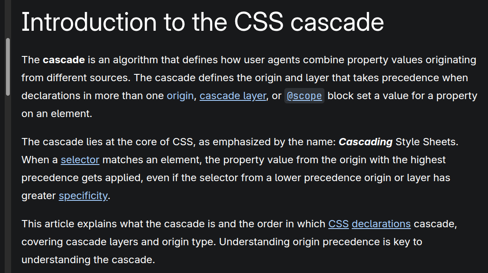

Specificity in CSS
Topics, I learn today
- Specificity
- Cascading
- inheritence
Introduction to Cascading
The cascade is an algorithm that defines how user agents combine property values originating from different sources.

Introduction to Specificity
Specificity means importance of a style, this Specificity is depend on how style is written and where.
- inline css is more importance(top)
- internal css has 2nd importance
- external css 3rd importance
- id # selector | has a more Specificity
- class . selector | has less then id